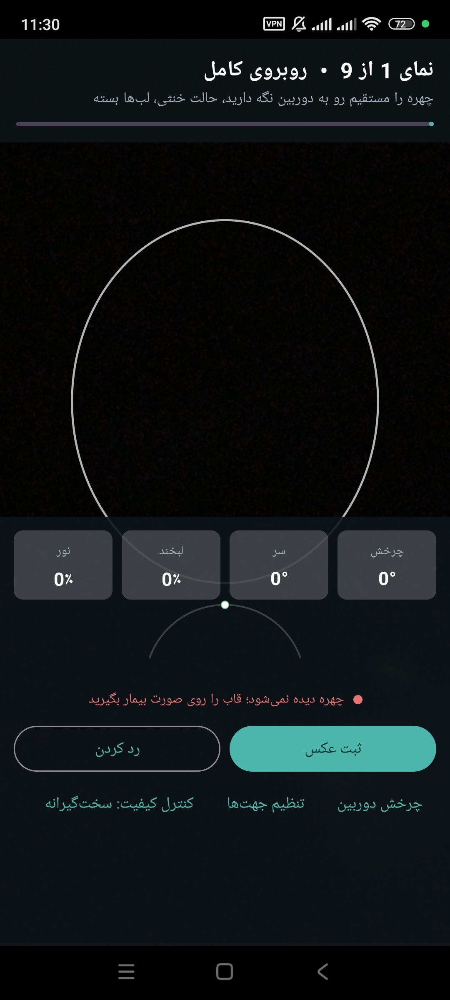

🎯
تشخیص لحظهای زاویهی سر
یاو/پیچ/رول با MediaPipe Face Landmarker محاسبه میشود و راهنمای فارسی میگوید چقدر و به کدام سمت باید سر بچرخانید.
اپ RhinoShot عکاسی ۹ نمای استاندارد رینوپلاستی/جراحی زیبایی را بهصورت هدایتشده انجام میدهد: زاویهی سر را لحظهای تشخیص میدهد، کیفیت تصویر را کنترل میکند، شاتر خودکار میزند و در پایان یک مدل سهبعدی قابل چرخش از چهره میسازد. همهچیز روی خود دستگاه و بدون هیچ دسترسی شبکهای.
SHA-256 · 9ae588707b2b71bed77fbbcbbc55ae13ee3eb4178e49d7d9761612e4a8889e0b

همهی قابلیتها روی خود گوشی اجرا میشوند؛ بدون سرور و بدون اینترنت.
یاو/پیچ/رول با MediaPipe Face Landmarker محاسبه میشود و راهنمای فارسی میگوید چقدر و به کدام سمت باید سر بچرخانید.
میزان لبخند و باز بودن چشمها از blendshapeهای مدل خوانده میشود و در کاشیهای زندهی پایین صفحه نشان داده میشود.
گیتهای فاصله، مرکزیت کادر، روشنایی و تاری (Tenengrad)؛ بهعلاوه دو حالت «سختگیرانه» و «آسان».
وقتی وضعیت ۹۰۰ میلیثانیه پایدار بماند، عکس گرفته میشود؛ حلقهی پیشرفت روی بیضی راهنما نمایش داده میشود.
از همان landmarkها یک مش (۴۶۸ رأس / ۸۹۸ مثلث) ساخته میشود؛ با درگ میچرخد، با pinch زوم میکند.
مدل هر نما با فرمت Wavefront OBJ ذخیره میشود و مستقیماً در نرمافزارهای سهبعدی باز میشود.
پوشهی هر جلسه: session.json، consent.txt، landmarks.json و کنتاکتشیت ۳×۳.
صفر شخصی سر و جهتهای چپ/راست/عقب برای هر کاربر ذخیره میشود تا زاویهها دقیق باشند.
با یک لمس، همهی جلسهها و دادههای بیمار از دستگاه پاک میشود.
متن رضایتنامهی فارسی بهصورت خودکار در پوشهی جلسه ذخیره میشود.
نمایش سهبعدی، راهنمای استفاده، دربارهی اپ و توسعهدهنده، حذف همهی دادهها.
اطلاعات برنامه، پروانهها، حریم خصوصی، هشدار پزشکی و مشخصات توسعهدهنده در یک صفحه.
هر نما تعریف دقیق زاویه، تحمل خطا و شرط کادر دارد؛ اپ تا رسیدن به زاویهی درست راهنمایی میکند.
توپولوژی از Canonical Face Model مدیاپیپ گرفته میشود و رأسها از همان نقاط تشخیصدادهشدهی هر عکس ساخته میشوند.
مدل سهبعدی از یک عکس تکچشمی بازسازی میشود؛ برای مشاهده و گفتوگو با بیمار مناسب است، ولی جایگزین اندازهگیری دقیق جراحی (سنسور عمق، سیتیاسکن یا عکسبرداری استاندارد) نیست. این هشدار در هر دو پلتفرم در رابط کاربری دیده میشود.
نمایشگر سهبعدی — Android: OpenGL ES 2 · iOS: SceneKit
اپ بههیچ سروری وصل نمیشود؛ مجوز INTERNET از مانیفست حذف شده است.
عکسها، نقاط چهره و مدل سهبعدی فقط در حافظهی خصوصی خود دستگاه ذخیره میشوند.
«حذف همهی دادهها» همهی جلسهها و فایلهای بیمار را پاک میکند.
انتقال به گالری یا اشتراکگذاری فقط با اقدام صریح اپراتور انجام میشود.
پروژه با Gradle (اندروید) و XcodeGen (iOS) ساخته میشود.
git clone https://github.com/ghahremany/rhinoshot.git
cd rhinoshot/RhinoShot
echo "sdk.dir=$ANDROID_HOME" > local.properties
./gradlew assembleReleasecd rhinoshot/RhinoShot-iOS
./bootstrap.sh # نیازمند Xcode 16 و xcodegen
open RhinoShot.xcodeprojکلید انتشار در مخزن عمومی قرار ندارد. برای ساخت release کلید خودتان را بسازید و در keystore.properties قرار دهید (راهنمای کامل در README مخزن).
نسخهی ۰٫۳٫۲ — همهی فایلها در بخش Releases مخزن گیتهاب.
نسخهی .ipa از پیش ساخته ارائه نمیشود (نیازمند macOS و Xcode)؛ پروژهی آماده در مخزن موجود است.
توسعهدهندهی اپ «بامین تهویه» — سامانهی محاسبات سرانگشتی تاسیسات (۲۸ ماشینحساب، آفلاین، فارسی)